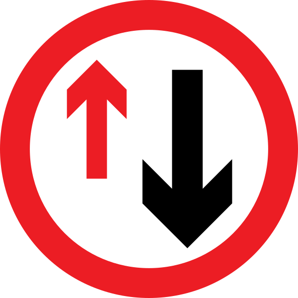

Loading...

Give priority to vehicles from opposite direction
🚫 Regulatory Signs
📖 Description
This sign indicates that oncoming vehicles have priority on a narrow road section. Drivers must wait and allow traffic coming from the opposite direction to pass first, especially where the road narrows or only one vehicle can pass at a time.